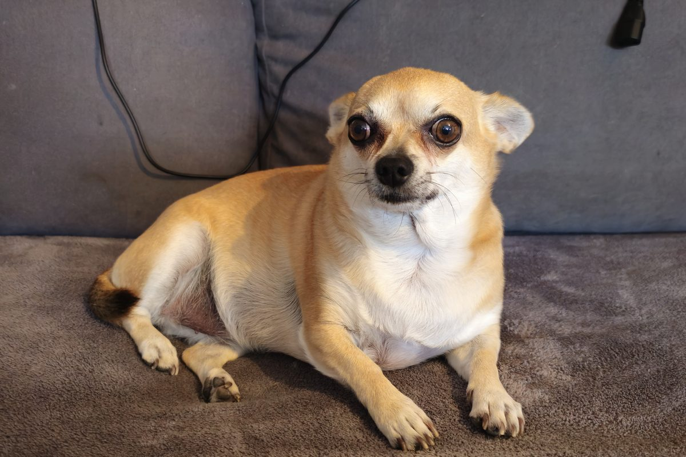

Chihuahua · Dinant
Un petit chihuahua beige et blanc, de très grands yeux et de grandes oreilles. Voici son portrait et ses photos, année après année.

Portrait
Chienne de petit format, à poil court, née à l’été 2020.
Son allure
Quatre détails qui, entre mille chihuahuas, ne trompent pas.
Ronds, brun très foncé, largement espacés et soulignés d’un contour sombre : un regard qui ne s’oublie pas.
Grandes pour sa tête, larges à la base, le plus souvent dressées et ouvertes sur les côtés dès qu’elle est attentive.
Un crâne bien rond, un museau court et fin, et une petite truffe noire.
Le dos fauve contraste avec une large zone blanche à crème sur la gorge et la poitrine.
Photos
Du petit chiot de 2020 à aujourd’hui. Cliquez sur une photo pour l’agrandir.
Voyages
Deux destinations déjà au compteur, faites ensemble.